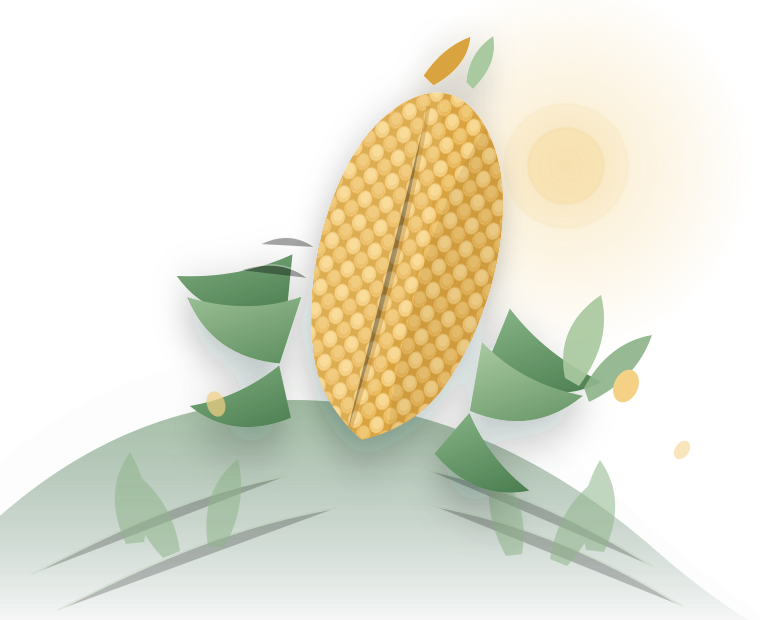
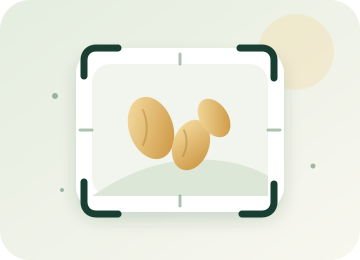

1
Photograph a kernel
Use one seed on a plain surface with even lighting.
Identify the supported maize seed categories from a clear photo, then explore practical growing guidance for your region of Tanzania.

Use one seed on a plain surface with even lighting.
The AI model runs inside your browser.
Explore growing notes for Tanzanian conditions.
Each category is a broad seed group, not a guarantee of a specific variety or certification.
Add Seed Classifier to your home screen for quick, full-screen access and offline use.
Seed Classifier runs on your device. Scan history and photos stay in your browser unless you delete them.
Photograph one maize kernel clearly. The model identifies the seed category on your device.

Take a photo now or choose one already saved on your phone.
You can also drag and drop an image here on a computer.
Direct camera access needs HTTPS or localhost. You can always upload a photo instead.
Place one kernel on a plain, contrasting surface. Fill most of the frame with the seed.
Check that the seed is clear and in focus before running the model.
This can take a few seconds while the model starts.
Understand the three supported seed groups and the conditions that matter in Tanzania.
Select a region to see its guidance.
Results saved on this device. Photos are kept only when you choose to include them.
History is stored in this browser only. Clearing browser data may remove it.
Ask me anything about maize seeds, growing, or your scan results.
Language, offline use, privacy and local data.
The interface changes immediately and keeps your current scan.
Core screens, the seed model and the AI runtime can be stored on your device for offline scanning.
You can prepare the offline pack or refresh cached files now.
Installing adds Seed Classifier to your home screen and opens it in its own window.
This browser has not offered an automatic install prompt. Follow the instructions for your device.
Seed Classifier is designed to keep your scan on your device. The classifier runs locally using WebAssembly and ONNX Runtime.
Direct camera access requires HTTPS or localhost. Photo upload works without camera permission.
The classifier is a small convolutional network exported to ONNX and run locally. It was trained on close-up images of individual maize kernels.
Project evaluation on seed-disjoint test data. Real-world accuracy varies with lighting, background and the seed itself.
Manage the classification summaries, photos and preferences stored by Seed Classifier.
This removes history, preferences and the offline cache from this device. The app will need an internet connection to download the model again.
A mobile-first maize seed classifier and growing guide for Tanzania.
Version 1.0.3